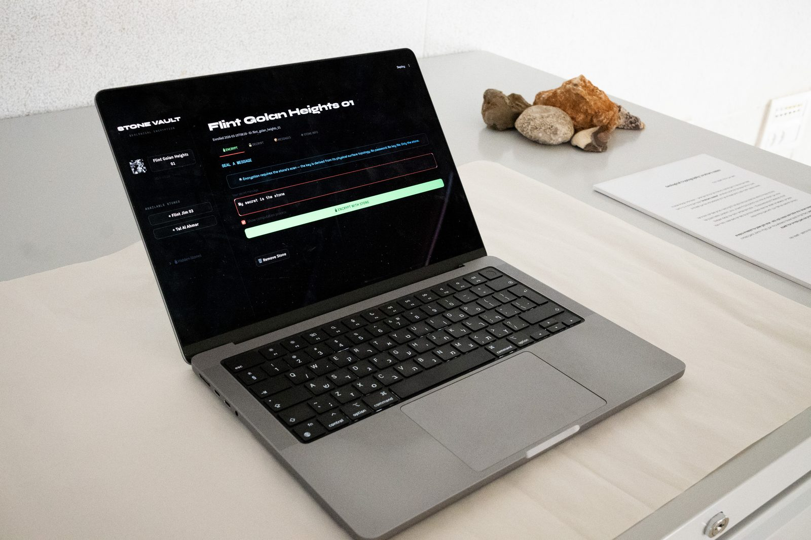
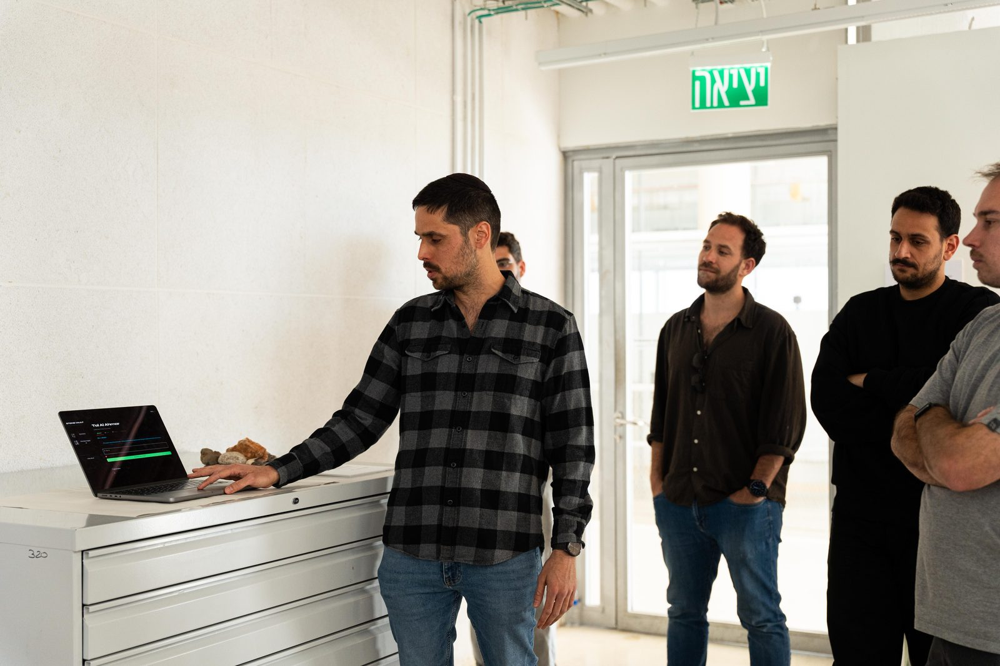

Bezalel Academy · M.Des Industrial Design · 2026
Speaking Matter
A digital twin of the physical exhibition. The visitor moves through four stations — touch, code, vault, fiction — and watches matter transform into data, and back.
Station 01 / The Physical Touch
Stamps press into clay.
The body content for this station will load from the locale JSON.

Station 02 / Digital Anatomy
Surface becomes signal.
The body content for this station will load from the locale JSON.

Station 03 / Geological Cryptography
Encrypt with a stone.
The body content for this station will load from the locale JSON.


Station 04 / Geological Fictions
Stones that never were.
The body content for this station will load from the locale JSON.
Loading stones…
Station 05 / Exhibition Documentation